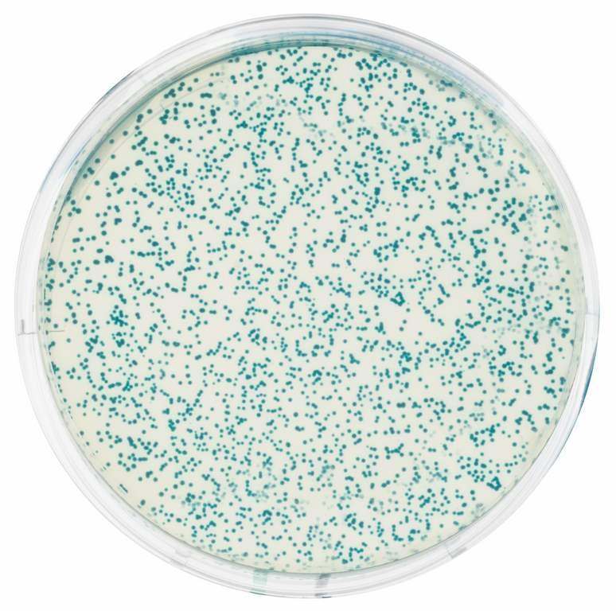
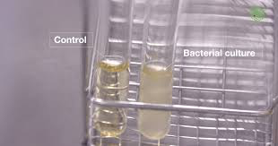

Then leave it overnight



Step by step: Colony Picking tutorial · bench cheatsheet
Seven things, and the first two are about choosing rather than doing. Everything after that is mechanical. Seven points on picking colonies, arriving one at a time. The first is on the slide already: pick well-rounded, isolated colonies representing distinguishable phenotypes.